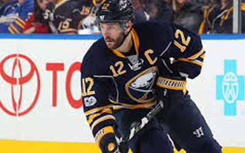
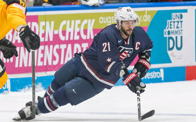
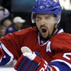

Summary
Brian Joseph Gionta (born January 18, 1979) is an American professional ice hockey player who is currently a member of the United States men's national ice hockey team. Gionta played professionally in the National Hockey League from 2001 to 2017, most recently with the Buffalo Sabres. Gionta is the middle child of Sam and Penny Gionta. He and his wife, Harvest, have three children, Adam, Leah and James (b. 2012)[12] He also has a brother, Stephen Gionta, who plays for the New York Islanders. He also has an older brother Joe, who also played for the Aquinas Institute Hockey Team and graduated in 1994. Brian Gionta has a home in the Rochester, NY area where his parents still reside.
How He Joined Team USA
The Sabres opted not to re-sign Gionta in the 2017 offseason after reacquiring Jason Pominville in a trade. The Sabres' owned-and-operated American Hockey League club, the Rochester Americans, signed Gionta to their practice squad on October 9, 2017. Since the practice-only contract is not with the NHL, Gionta will be able to participate in the Winter Olympics, following the NHL's announcement not to accommodate an Olympic break due to financial disputes with the IOC. [8] Gionta was officially named to Team USA's pre-Olympic roster on October 18, 2017.[9] Gionta has since been named USA team captain. Gionta admitted turning down NHL offers to participate in the Olympics and intends to re-sign with the league after the Olympics end.[10] On January 29, 2018, the Americans upgraded Gionta's practice-squad contract to a one-game professional tryout contract, allowing him to play the February 2, 2018 game against the Toronto Marlies before leaving for the Olympics.[11]
More About Him
Newcomers week at TD Garden continued Thursday night after Rick Nash and Tommy Wingels made their first home appearance in Black and Gold in a 4-3 OT win over the Carolina Hurricanes Tuesday. All Nash did was to cop No. 1 star of the game with a goal. Wingels grabbed the No. 2 star with a goal and an assist. Thursday night, the two-time defending Stanley Cup champion Pittsburgh Penguins came to town and Bruce Cassidy opted to give a nicked-up Matt Grzelcyk the night off and, likewise, for a slumping Danton Heinen, with one point in his last nine games. In their places, defenseman Nick Holden paired with Brandon Carlo, and Brian Gionta on the third line with Wingels and David Backes. Both made their debuts with equal aplomb in the Bruins’ 8-4 thrashing of the Penguins. “They’ve fit in seamlessly,” Bruce Cassidy said postgame.
